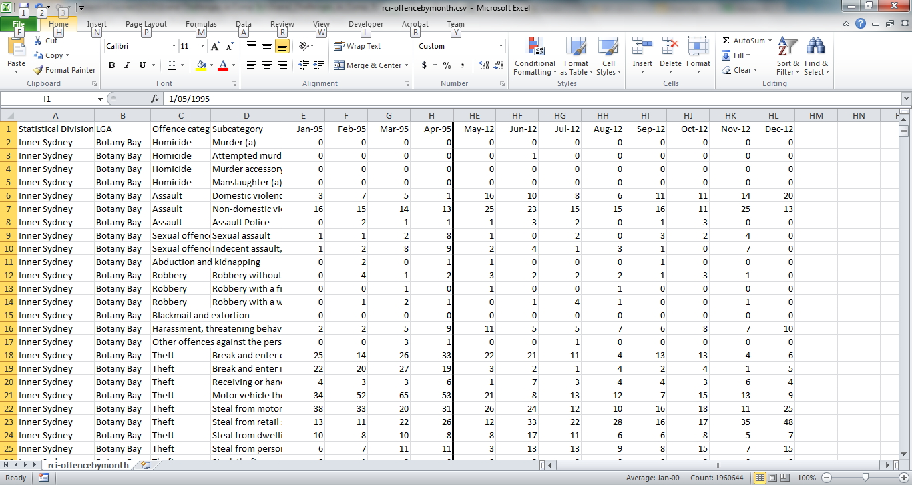
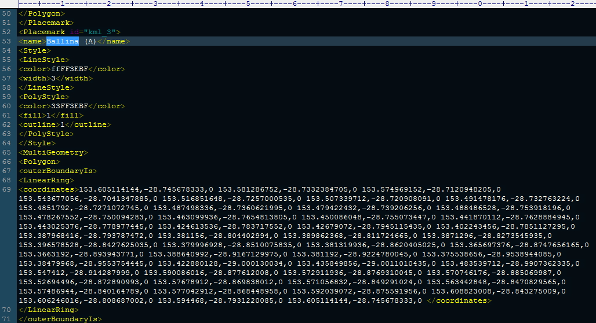

GC - UofA
Ken Ding
Department of Computer Science
University of Adelaide
North Terrace, Adelaide SA 5005
wenhe dot ding at student.adelaide.edu.au
DataSet
Crime Number: From 1995 to 2012, NSW
Unemployment Rate: From 2007 to 2011, NSW

KML: Define Suburbs of NSW Range (Latitude and Longitude of Each Corner and Edge)

News
October 31, 2013
My Project 2 of Grand Challenges is online now. Please free feel to give me any feedback. I hope everybody could harvest a great score. Best wishes to you!
More...
October 31, 2013
My Project 2 of Grand Challenges is online now. Please free feel to give me any feedback. I hope everybody could harvest a great score. Best wishes to you!
More...